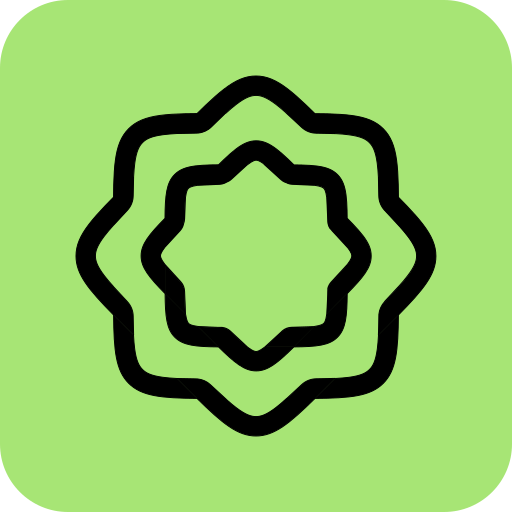

Tabla de Contenidos
01
Contexto y Problemática
02
Objetivos del Trabajo
03
Estado del Arte y Selección de Plataforma
04
Infraestructura y Arquitectura de Despliegue
05
Demostración en Vivo
Sección 01
Contexto y
Problemática
Problemáticas
01
Tiempo administrativo
02
Errores humanos
03
Falta de trazabilidad
04
Ocupa espacio innecesario
Sección 02
Objetivos del
Trabajo
Objetivo: Implementar y Desplegar Sistema de Firma Digital de Documentos
Objetivos Específicos del Trabajo
01
Relevamiento
& Selección
& Selección
Open Source
On-Premise
On-Premise
02
Arquitectura
& Políticas
& Políticas
Despliegue, Respaldos
y Usuarios
y Usuarios
03
Implementación
Piloto
Piloto
Validación
y Usabilidad
y Usabilidad
04
Documentación
& Transferencia
& Transferencia
Manuales
y Continuidad
y Continuidad
Sección 03
Estado del Arte y
Selección de Plataforma
Panorama del Mercado: Soluciones SaaS

|
|
 Adobe Sign
Adobe Sign
|
|
|---|---|---|---|
| Costo x Usuarioplan anual | $25/mes | $25/mes | $24/mes |
| Límite de Envíos | 100 sobres/añox usuario | Ilimitado | 150 sobres/añox usuario |
| Residencia de Datos | Infra propiaAWS · Azure | AWS | AWS · Azure |
| 20 Usuarioscosto estimado | $500/mes$6 000/año | $500/mes$6 000/año | $480/mes$5 760/año |
Panorama del Mercado: Soluciones Open Source

documenso / documenso
★ 12.9k
“The open source DocuSign alternative.”

docusealco / docuseal
★ 16.9k
“Open source DocuSign alternative. Create, fill, and sign digital documents.”
Comparativa: Documenso vs DocuSeal
|
Documenso
✓ Seleccionado
|
DocuSeal
|
|
|---|---|---|
| Gestión de Roles (RBAC) | Community Ed. | Enterprise Edition |
| Login con Google (SSO) | Community Ed. | Enterprise Edition |
| Branding Personalizado | Community Ed. | Enterprise Edition |
| Stack Tecnológico | Remix + PrismaPostgreSQL | Ruby on RailsPostgreSQL |
| Licencia | AGPL-3.0 | AGPL-3.0 |
Modelo Organizacional Alineado a la FACET
análogo
Un usuario puede pertenecer a múltiples departamentos y accede solo a los documentos de cada uno.
Integraciones con Servicios Externos
MinIO
Almacenamiento S3-compatible para los PDFs firmados.
Brevo
Relay SMTP para notificaciones. Capa gratuita: hasta 300 mails/día.
Login con Google
OAuth 2.0 con Google Workspace UNT: acceso con cuenta institucional.
Sección 04
Infraestructura y
Arquitectura de Despliegue
Sección 05